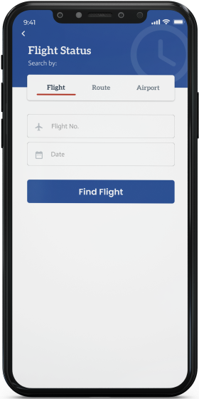
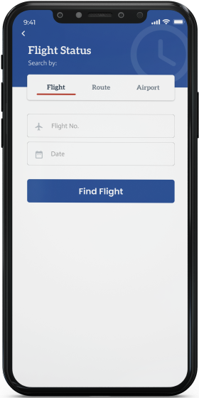

I believe that improving the search and booking process for people who will travel, will improve their understanding of using the booking app for booking flights.
Therefore users are more likely to finish the booking process which will reduce the number of cart abandonments for the booking app.
UX Research, Interaction design UI Design
DurationMay 2019- Sept 2020
Team2 UX /UI designers, 2 Developers, 1 QA,
A lack of system to make flight reservations from the comfort of encourage easy and seamless purchase of air tickets by air travellers and improve users experience navigating through?
Exploring user pain points
Because we wanted to get insights and form a solution from a real-time problem and not a preconceived data, we decided to interview individuals who are frequent air travellers, some of which were customers of the airline.
“What is your number one frustration , when booking for a flight ticket?"
Being able to book/purchase a flight ticket weeks before the departure date
Being able to check-in even before getting to the airport
Multiple online payment options
Getting discount/cheap flights
We looked into the market to examine other airlines, carried out a deep analysis of functional competitors and industry leaders in order to extract important features, practices and strategies.


We thought to pull from other working applications and thier already exisitng features . The purpose of this analysis was to get a better understanding and check out the what already worked for these other airlines in order to save us from re-designig from scratch. so i pulled insights from the top (3) three domestic airlines in Nigeria which are Arik, Dana and Aero contractors.
Focusing on my target audience
M/F , Age 18-60, Students and working class who have full time jobs.This will give us extra information about what and how to create a suitable solution..
We led a few moderated usability tests focusing on air travellers that frequently booked their own flights on a travel site. We tried to find out how users responded to the application.
1.) We used Zoom and Google meet to conduct remote usability tests, due to long distances it was not possible to conduct face to face usability testing.
2.) The users were people that frequently booked their own flights on a travel site
3.) We presented the mobile app design and gave them a set of pre-defined tasks including to book a return flight from Lagos to Cape any destination of thier choice for 2 adults for 7 days.

Whether a user wants to Book a Flight, view Flight Status, Check in or Manage Bookings.
Filtered and detailed for users of the app to choose from what city of departure to what city of arrival they are going.

Filtered and detailed for users of the app to choose from what city of departure to what city of arrival they are going.

Air Travellers can view details of their next trip. from the date to the time and also the flight number.
After usability testing, I gathered all the feedbacks and came up with high fidelity designs.
 



.png)
Working on this project was my first experience collaborating with Product Managers and Software Engineers in a cross-functional setting. This experience exposed me to what it’s like to tackle my role as a Product Designer while also putting myself in the shoes of Product Managers and Software Engineers. For example, many of my initial iterations included designs that would make intricate programs that would be difficult for engineers to develop. While I didn’t understand these issues at first, Engineers and Product Managers helped me better understand why certain designs wouldn’t be feasible.
2.) Time management/PrioritizingI learned how important it is to pick your battles when it comes to designing a product. During the ideation period, we came up with a variety of ideas to solve the problems we found in our research. Unfortunately, we didn’t have enough time to design every idea with the 48 hours we had. This situation helped me understand how to prioritize the most important aspects of a design.
Thanks for stopping by, If you like what you see, let’s work together. Shoot me a mail.